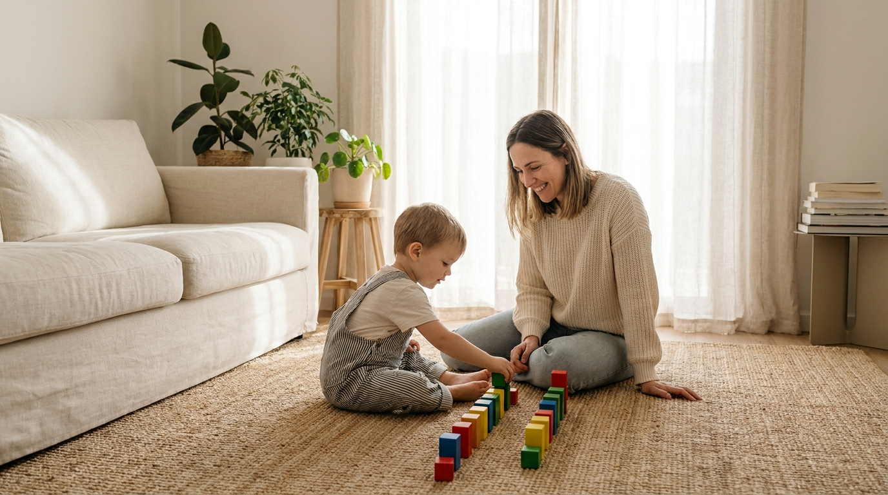
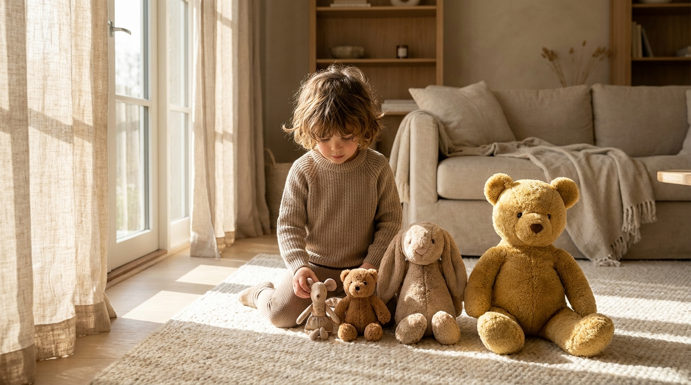

How to Practice Foundational Math Concepts at an Early Age (Ages 1–5)
By Leslie Dykstra · Certified Early Childhood Specialist · Williamson County, TN

When parents hear "early math," most picture counting to ten. But counting is only one small piece of the puzzle! The deepest math roots grow from how children talk about, compare, sort, and arrange the world around them — and you can water those roots every single day without a single worksheet. Here are the four foundational concepts I focus on with my littlest learners, and exactly how to practice each one at home.
1. Practice using positional words
Position and direction words are the very first geometry lesson — and they cost nothing but a sentence. Instead of "put the book away," try:
"George, can you place the book on top of the shelf, please?"
Words to sprinkle into your day: top, bottom, near, far, under, over — and don't forget to practice right and left! "Your cup is near your plate." "The ball rolled under the couch." "Hold the railing with your right hand." Every one of those sentences is quietly building spatial reasoning.
2. Compare objects

Comparing is measurement in its baby stage. Try questions like these during ordinary play:
- "Which toy is the biggest? Which is the smallest?" Then level up: "Can you place them in order from smallest to largest in a line?"
- "Which object do you think is heavier?" Let them hold one in each hand and be the judge.
- "What color do both of these cars have on them? How are they the same?" Finding sameness is just as mathematical as finding differences.
These little conversations grow into real number sense later on — because a child who can compare sizes and weights is already thinking in quantities.
3. Classify and sort objects
Here's one of my favorite five-minute activities: dump a couple of bins of toys out on the ground, mix them all up, and ask your child to sort them. Can they classify the objects by color? By shape? By size?
Sorting looks like tidying up (bonus!), but it's actually a huge math concept. Classifying is how children practice comparing and contrasting objects while strengthening color and shape recognition at the same time. And if your child loves to line everything up before sorting — wonderful! That's their beautiful brain at work, as I wrote about in why every brain organizes a little differently.
4. Make patterns
Patterns are pre-algebra in disguise. Can your child create a pattern with their cereal at breakfast? With blocks on the floor? Different colored dot markers are another favorite of mine — one dot of red, one of blue, and away they go.
Start by making a pattern yourself and letting your child extend it: "Red, blue, red, blue… what comes next?" Once your child can extend patterns easily, see if they can generate patterns independently — their very own ABABAB, AABBAABB, or ABCABC creations. That leap from continuing a pattern to inventing one is a big, exciting milestone.
The best part? This is all just play
Nothing on this list requires a curriculum or a cart full of supplies. It's books on shelves, toys on the floor, and cereal on the table — plus a grown-up who narrates and asks good questions. If you'd like even more ideas, I've shared my favorite everyday math activities and the early math skills that matter most before kindergarten.
And if you'd like a partner in building these foundations, my math tutoring for ages 3–8 starts exactly here — with play, patterns, and confidence.
Frequently asked questions
What math skills come before counting?
Long before reliable counting, children build math thinking through positional words (on top, under, near, far), comparing objects (bigger, smaller, heavier), classifying and sorting (by color, shape, or size), and making patterns. These four foundations grow naturally through everyday play between ages 1 and 5 — no worksheets required.
What's the difference between extending a pattern and creating one?
Extending a pattern means your child can continue one you started — you lay out red, blue, red, blue and they add the next red. Creating a pattern is the bigger milestone: your child builds their own repeating pattern from scratch, like ABAB, AABB, or ABC. Once extending is easy, invite them to invent their own and watch what they come up with.
Do I need special materials to practice early math at home?
Not at all! Everything in this post uses what you already have: books on a shelf, toy cars, stuffed animals, blocks, cereal, and dot markers. Early math is a way of talking and playing, not a product you buy. The magic ingredient is you narrating and asking questions while you play together.
Want a partner in your child's math journey?
Book a free 15-minute consultation with Leslie to talk about where your child is and what would help them most. Little Minds, Big Futures — where every child's potential takes flight.